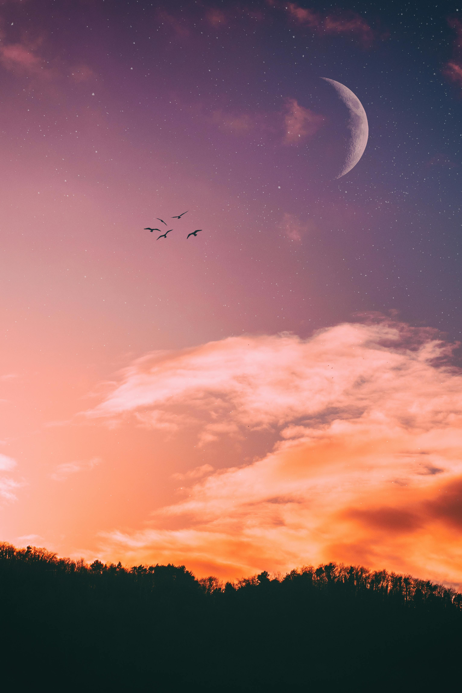
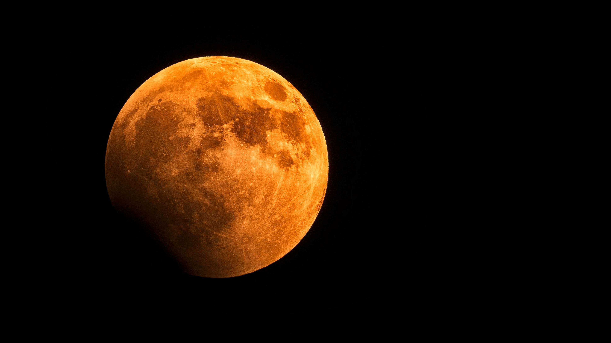

It really is the most beautiful thing to ever exist, a perfect celestial body. It is a cute little dusky ball of rock.
Random facts about the moon


It takes 27 days for the Moon to go around Earth and 27 days to rotate once on its axis. Because the Moon is orbiting Earth at the same rate at which it rotates itself, this means that the same side of the Moon always faces the Earth. A "blood moon" happens when Earth's moon is in a total lunar eclipse. While it has no special astronomical significance, the view in the sky is striking as the usually whitish moon becomes red or ruddy brown.Although compared to the night sky it appears very bright, with a reflectance just slightly higher than that of worn asphaltAll six human Moon landings to date have been part of NASA's Apollo programme, which ran between 1961 and 1972.